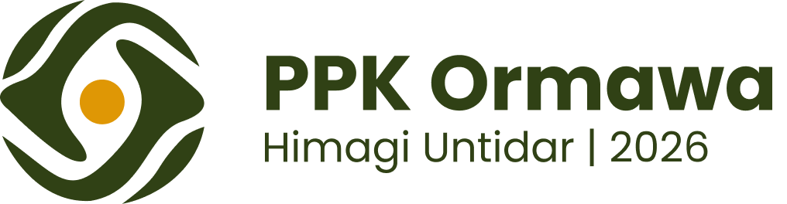

PPK Ormawa 2026 • Kemendikbudristek
IN WEST TAMP
Integrated Wellness-Tourism Area Tampirkulon
Pengembangan Desa Wisata Berbasis Wellness-Tourism Melalui Pemberdayaan Masyarakat dengan Pendekatan Kesehatan & Smart Management.
Media Sosial & Narahubung